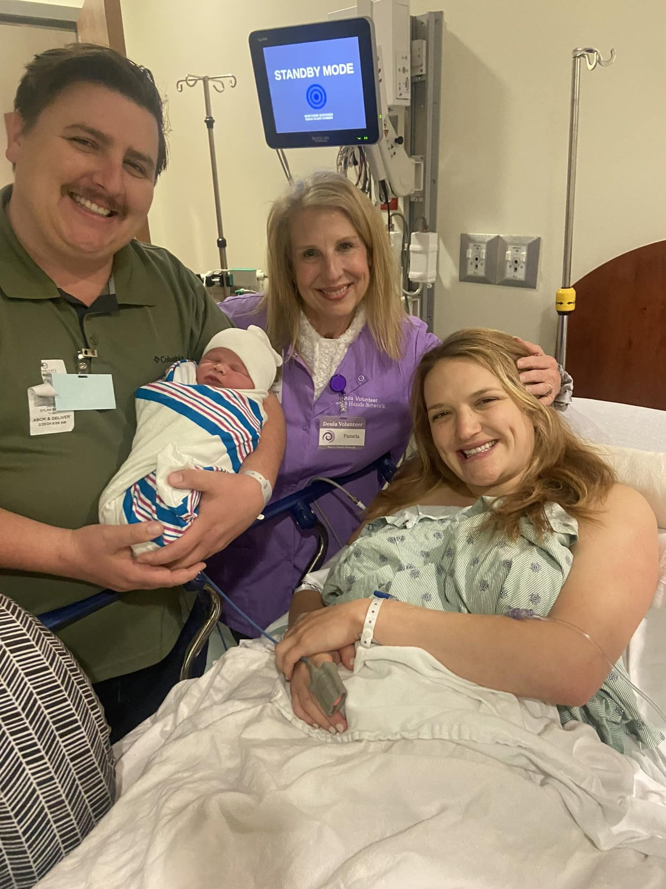
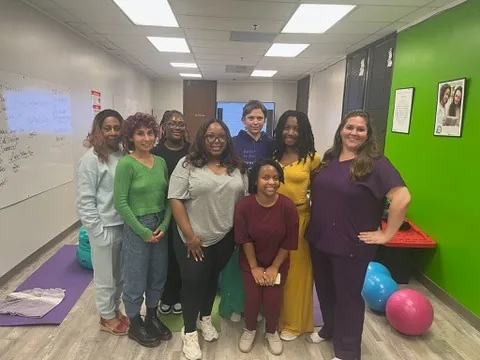

Cada nacimiento merece una doula.
Nuestra misión es empoderar a las familias, promover la excelencia en el parto y cerrar la brecha de equidad en salud en nuestra comunidad.


Encuentra tu lugar en la red.

Familias
Solicita una doula voluntaria gratuita que te acompañe durante el trabajo de parto, el nacimiento y las primeras ocho semanas posparto. La solicitud toma 15 minutos.
Comienza tu solicitud
Trabajadoras del parto
Únete a la red de doulas voluntarias más grande de Louisiana y ayuda a cambiar los resultados de salud materna en tu comunidad. Solicita ahora para unirte a nuestra próxima cohorte certificada por ICEA.
Solicita unirte a la red
Personas que apoyan
$50 financian un kit de parto. $950 financian un cupo de capacitación. Cada donación es deducible de impuestos y se destina a un rubro específico que podemos mostrarte.
Conoce cómo donarFechas de capacitación y de la gala.

Conviértete en doula de parto voluntaria.
Capacitación aprobada por ICEA. Cuatro noches en vivo en línea y un sábado presencial en Baton Rouge. Becas de Louisiana Blue Foundation y Love One Louisiana Foundation. Las solicitudes de beca cierran el 10 de ene; la inscripción al curso cierra el 29 de ene.

Una noche en su honor.
In Her Honor: A Legacy in Lavender · 8 de enero de 2027
Renaissance Hotel, 7000 Bluebonnet Blvd, Baton Rouge, LA. Una noche en honor de las mujeres de nuestra comunidad y de quienes han estado presentes para ellas.
 Patrocinadora del título: My Bump Hub
Patrocinadora del título: My Bump Hub
Alguien de tu lado, capacitada para acompañarte durante el embarazo, el parto y las primeras semanas posparto.
Una doula es una persona de apoyo no clínico que permanece a tu lado durante el parto y los días siguientes. Las doulas no reemplazan a las enfermeras, parteras ni médicos. Acompañan al equipo médico y se aseguran de que tengas una mano firme, una voz familiar y respuestas a tus preguntas cuando las necesites.
Lo que hacen las doulas
- Apoyo emocional continuo durante el embarazo, el parto y las primeras semanas
- Medidas de confort físico: contrapresión, compresión de caderas, rebozo, pelota de parto, posición en cuatro puntos
- Información basada en evidencia para que tomes decisiones informadas sobre tu cuidado
- Permanecen durante los cambios: las enfermeras cambian de turno; tu doula no
- Te ayudan a abogar con tu equipo médico, convirtiendo tus deseos en preguntas claras
- Alivio del dolor sin medicamentos: respiración, movimiento, agua, música, tacto
Lo que no hacen las doulas
- Diagnosticar ni tratar condiciones médicas
- Realizar evaluaciones clínicas como signos vitales, exámenes vaginales o monitoreo fetal
- Recetar ni administrar ningún medicamento
- Anular las decisiones de enfermeras, parteras o médicos
- Dar consejos médicos. Esa responsabilidad le corresponde a tu equipo médico.
- Reemplazar a tus proveedores médicos de ninguna manera
Menos cesáreas. Menos partos prematuros.
Para las familias atendidas por Mary’s Hands Network, nuestros resultados registrados por el IRB muestran una tasa de cesáreas de menos del 15% frente al 36,1% de Louisiana y una tasa de parto prematuro del 4% frente al 13% de Louisiana (71% menos).
El apoyo de doula continuo y culturalmente humilde es una de las intervenciones con más respaldo en la salud materna, y creemos que debe ser gratuito para cualquier familia que lo desee.
Tres pilares, una misión.
Apoyo a las familias
Cuidado de doula gratuito, educación y encuentros comunitarios para las familias que atendemos.
- Cuidado de doula gratuito para cualquier madre de Louisiana que lo solicite
- Línea de Doulas 24/7 al (225) 424-7532
- Apoyo en el duelo para familias que han sufrido una pérdida
- Apoyo bilingüe, apoyo en español
- Baby showers comunitarios y distribución de recursos
- Clases prenatales, posparto y de crianza (próximamente en 2027)
Desarrollo de la fuerza laboral
Capacitamos a las trabajadoras del parto que sirven a nuestras comunidades, según los estándares de ICEA y MHN.
- Capacitación de doula aprobada por ICEA, 285 doulas capacitadas desde 2023
- Capacitación de doula posparto
- Capacitación de especialidad en duelo
- Capacitaciones personalizadas para organizaciones según los estándares de ICEA y MHN
- Capacitación de doula en español (con apoyo de patrocinadores)
- Desarrollo profesional continuo para voluntarias activas
Impacto comunitario
En eventos comunitarios, en espacios de políticas públicas y en los datos de resultados.
- Investigación de resultados aprobada por el IRB con Baton Rouge General
- Tasa de cesáreas de menos del 15% frente al 36,1% de Louisiana
- Tasa de parto prematuro del 4% frente al 13% de Louisiana (71% menos)
- Alcance comunitario y participación en eventos
- Participación en políticas públicas y abogacía
- Distribución de recursos a familias necesitadas
Diecinueve cohortes y contando.
Cada doula de nuestra red se capacita junto a su cohorte y luego se certifica para servir a las familias de Louisiana.




Nuestros aliados.
Los hospitales, fundaciones y organizaciones de todo el estado que hacen posible nuestro trabajo.